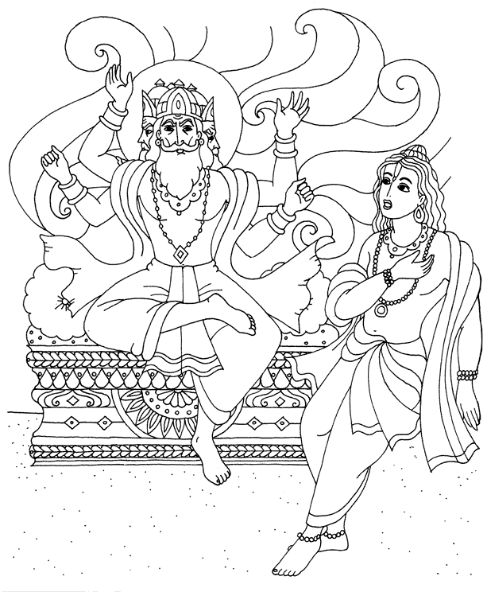

El señor Brahma sintiendose irrespetado se enfureció mucho, incluso estaba dispuesto a maldecir a su hijo, pero controló su ira con gran inteligencia. En esta forma el sabio Bhrigu pudo concluir que si bien la cualidad de la pasión surgió en el corazón de Brahma, él tenia el poder de controlarla...